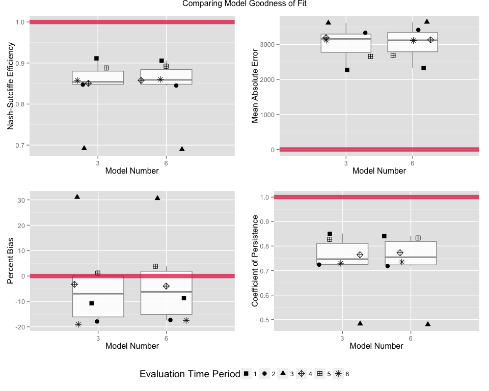

Time Series Analysis Tutorial
Overview
This tutorial explores basic data manipulation and time series analysis techniques. The data set is a complete record of the mean monthly flows of the Ganges from January 1934 to December 2013. The source code and data for this tutorial is available here. The most recent web version of this document is available here.
Data Cleaning
Importing the Data
First let’s load our data into a data frame object using the read.csv() command. Then we’ll followup with a head() command to look at the first few rows of the data set.
ganges <- read.csv("data/Ganges.csv")
head(ganges)## Year Jan Feb Mar Apr May Jun Jul Aug Sep Oct Nov Dec
## 1 1934 2778 2458 2228 2138 1987 3613 19775 36277 40084 18625 6197 3432
## 2 1935 2389 2056 1625 1888 1654 2918 13086 38239 27645 13908 4531 3356
## 3 1936 2858 2312 2442 1434 1778 5189 22873 39497 38061 16688 6665 3830
## 4 1937 2630 2495 2392 1803 1877 3440 11893 33913 30065 18748 6379 3495
## 5 1938 2550 2176 2013 2216 2053 8557 28319 43681 33735 10132 4880 3254
## 6 1939 2291 2164 2096 1750 1790 3090 13052 28606 26545 12759 5277 3132The data are organized into 13 columns. The first contains the year of the observations in a given row, while the other 12 contain the mean monthly flow in cubic feet per second (CFS).
Checking for Missing Values
Let’s verify that the data set is complete. With a data set this small it is easy to look for missing data visually, but with larger data sets this is difficult. For a simple check we can use sapply() and is.na(). Here we count each occurrence of missing data using sum(). The result is a column-wise count of the missing values. If the data set is complete we should see all zeros.
sapply(ganges, function(x) sum(is.na(x)))## Year Jan Feb Mar Apr May Jun Jul Aug Sep Oct Nov Dec
## 0 0 0 0 0 0 0 0 0 0 0 0 0Reshaping the Data Frame
The shape of the data frame is not currently very conducive to plotting as a time series. It would be easier to plot discharge as a function of time if there were instead one observation of discharge per row. An easy way to make this happen is to “melt” the data frame using the reshape2 package. The melt() takes arguments that specify how the data frame should be “melted.” The id.vars argument specifies the names of the columns that should be preserved as columnar variables. Here we want to preserve the Year column. The rest of the columns melt into attributes within the rows. We will assign the column headings to a new column Month.Abb and their associated values to the column Flow, using the variable.name and value.name arguments respectively.
require(reshape2)
ganges <- melt(ganges, id.vars="Year", variable.name="Month.Abb", value.name="Flow")
head(ganges)## Year Month.Abb Flow
## 1 1934 Jan 2778
## 2 1935 Jan 2389
## 3 1936 Jan 2858
## 4 1937 Jan 2630
## 5 1938 Jan 2550
## 6 1939 Jan 2291Augmenting the Data Frame
Now that we have the data in the format we’d like, let’s add a few extra attributes that will be helpful. We’ll be using the plyr package and the transform() function for this purpose. As a first step, let’s add a column MID as an integer representation of the Month.Abb attribute. The base package in R pre-loads three-letter abbreviations for months into the vector month.abb. It can be accessed anytime by simply calling it:
month.abb ## [1] "Jan" "Feb" "Mar" "Apr" "May" "Jun" "Jul" "Aug" "Sep" "Oct" "Nov"
## [12] "Dec"The ordering here is intuitive. January = 1, February = 2, etc. We can use this to create a function that match the Month.Abb attribute in our data set with index of the abbreviation in month.abb.
getMID <- function(x){ match(x, month.abb) }Let’s give it a try.
getMID("May")## [1] 5Now let’s pass the getMID() to the transform() function from the plyr package to augment our data set.
require(plyr)
ganges <- transform(ganges, MID = getMID(Month.Abb))
head(ganges)## Year Month.Abb Flow MID
## 1 1934 Jan 2778 1
## 2 1935 Jan 2389 1
## 3 1936 Jan 2858 1
## 4 1937 Jan 2630 1
## 5 1938 Jan 2550 1
## 6 1939 Jan 2291 1Sorting the Data
Our data is not currently sorted by time. However, now that we have numeric representations of both the years and months of our observations, we can use arrange() from the plyr package to quickly sort our data. Let’s arrange() the data in ascending order of Year and then MID.
ganges <- arrange(ganges, Year, MID)
head(ganges)## Year Month.Abb Flow MID
## 1 1934 Jan 2778 1
## 2 1934 Feb 2458 2
## 3 1934 Mar 2228 3
## 4 1934 Apr 2138 4
## 5 1934 May 1987 5
## 6 1934 Jun 3613 6N.B.: We have been using head() to check the first 6 rows of our data, but we can also use tail() to see the last six rows.
tail(ganges)## Year Month.Abb Flow MID
## 943 2012 Jul 11955 7
## 944 2012 Aug 24402 8
## 945 2012 Sep 28627 9
## 946 2012 Oct 12034 10
## 947 2012 Nov 4122 11
## 948 2012 Dec 2186 12Indexing the Data
As a final step, it is useful to have an index of the data. Here we will just use the order of the rows, since the data is sorted. This time we will just use the $ accessor method to access the desired column from the data frame. When $ is used with a name that is not currently in the data frame a new column is created. We will use the colon operator to generate a regular sequence (e.g. 1, 2, 3…) from 1 to the number of rows. We can use nrow() to calculate the number of rows.
ganges$Index <- 1:nrow(ganges)
head(ganges)## Year Month.Abb Flow MID Index
## 1 1934 Jan 2778 1 1
## 2 1934 Feb 2458 2 2
## 3 1934 Mar 2228 3 3
## 4 1934 Apr 2138 4 4
## 5 1934 May 1987 5 5
## 6 1934 Jun 3613 6 6Data Exploration
Plotting the Time Series
We’re finally ready to plot the data. The ggplot2 package provides decent graphics capabilities out of the box. Let’s fire them up and plot the monthly flow series.
require(ggplot2)
timerange <- paste("(", min(ganges$Year), "-", max(ganges$Year), ")")
p1 <- ggplot(ganges, aes(y=Flow, x=Index)) + geom_line()
p1 <- p1 + ggtitle(paste("Time Series of Ganges Monthly Mean Flow", timerange))
p1 <- p1 + ylab("Flow (CFS)") + theme_bw()
p1Boxplots by Month
The data seems to be exhibiting serious seasonality, but it is difficult to tell what is really going on at this scale. Let’s bin the data by month and plot a box-plot.
p1 <- ggplot(ganges, aes(y=Flow, x=Month.Abb)) + geom_boxplot() + theme_bw() + xlab("")
p1 <- p1 + ggtitle(paste("Boxplot of Ganges Monthly Mean Flows by Month", timerange))
p1The box-plots make the structure of the within-year variability is clearer. The strength of the correlation at a monthly lag of 12 is highlighted in the plot below. We will have to remove this structure to make the series stationary.
for(i in 1:12){
ganges.lag12 = rep(NA, nrow(ganges))
ganges.lag12[1:12==(i)] = ganges$Flow[1:12==(i)]
p1 <- ggplot(ganges, aes(y=Flow, x=Index)) + theme_bw()
p1 <- p1 + geom_line() + geom_point(aes(y=ganges.lag12)) + ylab("Log Flow")
p1 <- p1 + ggtitle(paste("Highlighting the Lag 12 Correlation in Ganges Mean Monthly Flows",
timerange))
print(p1)
}Summary Statistics
It can be helpful to have a table of summary statistics to refer to. The ddply() function in the plyr package is very powerful. It includes a sub-command summarize that will return a data frame summarizing the data to your specifications. Here we’d like a summary table of the Mean, Standard Deviation, and Coefficient of Variation by Month.
sum.stats <- ddply(ganges, "Month.Abb", summarize,
Mean = mean(Flow),
SD = sd(Flow),
CV = Mean/SD)
sum.stats## Month.Abb Mean SD CV
## 1 Jan 2537.051 1123.8789 2.257406
## 2 Feb 2013.582 843.4563 2.387299
## 3 Mar 1663.063 765.5877 2.172270
## 4 Apr 1519.101 648.6989 2.341766
## 5 May 1758.266 574.2320 3.061943
## 6 Jun 3987.658 1617.7573 2.464930
## 7 Jul 18763.671 5860.1183 3.201927
## 8 Aug 37200.608 8042.0985 4.625734
## 9 Sep 35987.203 8398.9176 4.284743
## 10 Oct 17374.139 6488.6895 2.677604
## 11 Nov 6505.380 2290.9823 2.839559
## 12 Dec 3761.633 1657.3911 2.269611The pander package includes some nice table formatting features. Let’s apply it to our table by calling the pander() function.
require(pander)
panderOptions('digits', 3)
panderOptions('keep.trailing.zeros', TRUE)
pander(sum.stats)| Month.Abb | Mean | SD | CV |
|---|---|---|---|
| Jan | 2537 | 1124 | 2.26 |
| Feb | 2014 | 843 | 2.39 |
| Mar | 1663 | 766 | 2.17 |
| Apr | 1519 | 649 | 2.34 |
| May | 1758 | 574 | 3.06 |
| Jun | 3988 | 1618 | 2.46 |
| Jul | 18764 | 5860 | 3.20 |
| Aug | 37201 | 8042 | 4.63 |
| Sep | 35987 | 8399 | 4.28 |
| Oct | 17374 | 6489 | 2.68 |
| Nov | 6505 | 2291 | 2.84 |
| Dec | 3762 | 1657 | 2.27 |
Making The Series Stationary
Transformations
We have already seen that the plot of monthly flows is highly seasonal with neither a constant mean or variance. Applying a transform to the data can help stabalize the variance. Let’s see how a log transform looks.
timerange <- paste("(", min(ganges$Year), "-", max(ganges$Year), ")")
p1 <- ggplot(ganges, aes(y=log(Flow), x=Index)) + geom_line()
p1 <- p1 + ggtitle(paste("Time Series of Ganges Monthly Log-Transformed Mean Flow", timerange))
p1 <- p1 + ylab("Log Flow") + theme_bw()
p1Standardizing
We can further stabilize the mean and variance by standardizing the series. Again, we’ll turn to the plyr package. First let’s add a column for our log-transformed data using the transform() function.
ganges <- transform(ganges, Log.Flow = log(Flow))
head(ganges)## Year Month.Abb Flow MID Index Log.Flow
## 1 1934 Jan 2778 1 1 7.929487
## 2 1934 Feb 2458 2 2 7.807103
## 3 1934 Mar 2228 3 3 7.708860
## 4 1934 Apr 2138 4 4 7.667626
## 5 1934 May 1987 5 5 7.594381
## 6 1934 Jun 3613 6 6 8.192294Now we’ll use ddply() and summarize() to create summary statistics about the means of the log-transformed flows.
log.flow.monthly.stats <- ddply(ganges, "Month.Abb", summarize, Log.Flow.M.Mean = mean(Log.Flow), Log.Flow.M.SD = sd(Log.Flow))
head(log.flow.monthly.stats)## Month.Abb Log.Flow.M.Mean Log.Flow.M.SD
## 1 Jan 7.758477 0.3953657
## 2 Feb 7.516288 0.4442656
## 3 Mar 7.292052 0.5324115
## 4 Apr 7.214886 0.5055721
## 5 May 7.413945 0.3569764
## 6 Jun 8.208680 0.4194766Next, we join the summary statistics back to the original data set using plyr’s join() function.
ganges <- join(ganges, log.flow.monthly.stats, by="Month.Abb")
head(ganges)## Year Month.Abb Flow MID Index Log.Flow Log.Flow.M.Mean Log.Flow.M.SD
## 1 1934 Jan 2778 1 1 7.929487 7.758477 0.3953657
## 2 1934 Feb 2458 2 2 7.807103 7.516288 0.4442656
## 3 1934 Mar 2228 3 3 7.708860 7.292052 0.5324115
## 4 1934 Apr 2138 4 4 7.667626 7.214886 0.5055721
## 5 1934 May 1987 5 5 7.594381 7.413945 0.3569764
## 6 1934 Jun 3613 6 6 8.192294 8.208680 0.4194766Now, we’ll mutate() the data frame one last time to get the standardized series. (Mutate is similar to transform, except that the newly declared columns can be reused right away to declare other new columns.) Let’s call it Log.Flow.Standardized.
ganges <- mutate(ganges,
Log.Flow.M.Mean.Removed = Log.Flow - Log.Flow.M.Mean,
Log.Flow.Standardized = Log.Flow.M.Mean.Removed / Log.Flow.M.SD)
head(ganges)## Year Month.Abb Flow MID Index Log.Flow Log.Flow.M.Mean Log.Flow.M.SD
## 1 1934 Jan 2778 1 1 7.929487 7.758477 0.3953657
## 2 1934 Feb 2458 2 2 7.807103 7.516288 0.4442656
## 3 1934 Mar 2228 3 3 7.708860 7.292052 0.5324115
## 4 1934 Apr 2138 4 4 7.667626 7.214886 0.5055721
## 5 1934 May 1987 5 5 7.594381 7.413945 0.3569764
## 6 1934 Jun 3613 6 6 8.192294 8.208680 0.4194766
## Log.Flow.M.Mean.Removed Log.Flow.Standardized
## 1 0.17100998 0.43253625
## 2 0.29081527 0.65459781
## 3 0.41680773 0.78286758
## 4 0.45274049 0.89550128
## 5 0.18043650 0.50545773
## 6 -0.01638627 -0.03906361Now when we plot box-plots by month, we see a consistent distribution of standardized flows.
p1 <- ggplot(ganges, aes(y=Log.Flow.Standardized, x=Month.Abb)) + geom_boxplot() + theme_bw()
p1 <- p1 + ggtitle(paste("Boxplot of Standardized Ganges Log-Mean Flows by Month", timerange))
p1 <- p1 + ylab("Standardized Log-Transformed Flow") + xlab("")
p1
Finally we’d like to look at the full and partial correlograms, which plot the autocorrelation and partial autocorrelation as functions of the time lag, k. The built-in R functions acf() and pacf would do the trick. However, here we will create our own functions using graphics objects from the ggplot2 package.
correlogram <- function(x, type = "correlation"){
gacf = acf(x, plot=FALSE, lag.max=120, type = type)
gacf.df = with(gacf, data.frame(lag, acf))
gacf.df$sig = qnorm((1 + 0.95)/2)/sqrt(length(x))
q <- ggplot(data = gacf.df, mapping = aes(x = lag, y = acf))
q <- q + xlim(c(0,120)) + theme_bw()
q <- q + geom_hline(aes(yintercept = 0))
q <- q + geom_segment(mapping = aes(xend = lag), yend = 0, lwd = 1)
q <- q + geom_hline(aes(yintercept = c(sig, -1*sig)), linetype = 2, colour = "#e51843")
if(type == "partial"){
q <- q + ylab(expression(alpha[k]))
} else {
q <- q + ylab(expression(rho[k]))
}
q <- q + xlab("lag k")
}Now let’s plot the correlograms. We’ll be using the gridExtra packages to help arrange the graphics on the page.
require(gridExtra)
q1 <- correlogram(ganges$Log.Flow.Standardized) + xlab(" ") + ggtitle("Total and Partial Correlograms")
q2 <- correlogram(ganges$Log.Flow.Standardized, type = "partial")
grid.arrange(q1, q2, nrow = 2)
The seasonal correlation is clearly still alive and well. Next we’ll take a look at difference to try and account for this correlation.
Local First Order Differencing
Local (lag = 1) first order differencing can be employed to help reduce seasonal auto-correlation in the total correlogram. However it also introduces negative correlation in the partial correlogram. This is the result in the plot below. It may be possible to model the behavior of the partial correlogram with the moving-average (MA) term(s) in our forthcoming ARIMA model, however with 12 consecutive significant lags in the partial correlogram, local first order differencing seems to do more harm than good.
ganges.diff <- diff(ganges$Log.Flow.Standardized, 1)
q1 <- correlogram(ganges.diff) + xlab(" ")
q1 <- q1 + ggtitle("Total and Partial Correlograms with First Order Differencing at Lag 1")
q2 <- correlogram(ganges.diff, type = "partial")
grid.arrange(q1, q2, nrow = 2)
Seasonal Differencing
As an alternative to first order differencing at lag 1, we can apply a “seasonal” first order differencing at lag 12. This can be done by changing the argument passed to the diff() function.
ganges.diff12 <- diff(ganges$Log.Flow.Standardized, 12)
q1 <- correlogram(ganges.diff12) + xlab(" ")
q1 <- q1 + ggtitle("Total and Partial Correlograms with First Order Differencing at Lag 12")
q2 <- correlogram(ganges.diff12, type = "partial")
grid.arrange(q1, q2, nrow = 2)Once again this differencing reduced seasonality in the total correlogram but introduced additional correlation in to the partial correlogram. For now we will neither accept nor reject the need for seasonal or local differencing. We test values for both d (local) and D (seasonal) differencing in the next section on ARIMA model selection.
ARIMA Modeling
Parameters
Here we will be considering auto-regressive integrated moving average models of the form \(ARIMA(p,d,q) \cdot ARIMA(P,D,Q)_{12}\) where the parameters are defined as follows:
- p - number of autoregressive terms
- d - order of lag 1 differencing
- q - number of moving-average terms
- P - number of seasonal auto-regressive terms
- D - order of lag 12 differencing
- Q - number of seasonal moving-average terms
Defining a Search Space
Looking at the differenced correlograms did not lead to a conclusive set of parameter candidates. As a consequence we will consider a suite of ARIMA models up to order 3 for p, d, and q. Furthermore we will consider seasonal differencing D up to order 1 and P and Q up to order 2. There is some subjectivity in choosing this search space and it is by no means exhaustive. However, for the purposes of this exercise the space is quite comprehensive. In total we will consider \((4)(4)(4)(3)(2)(3) = 1152\) different ARIMA models.
We will define the space using regular sequences for each of the variables and subsequently expanding them using the built-in expand.grid() function.
p = 0:3; d = 0:3; q = 0:3
P = 0:2; D = 0:1; Q = 0:2
Arima.Models <- expand.grid(p=p, d=d, q=q, P=P, D=D, Q=Q)
tail(Arima.Models)## p d q P D Q
## 1147 2 2 3 2 1 2
## 1148 3 2 3 2 1 2
## 1149 0 3 3 2 1 2
## 1150 1 3 3 2 1 2
## 1151 2 3 3 2 1 2
## 1152 3 3 3 2 1 2Selection Criteria
We will be fitting ARIMA models using the Arima() function in the forecast package. It returns three criteria for selection, which are listed as follows:
- AIC - Akaike Information Criterion
- AICc - Akaike Information Criterion (Correction for Finite Sample Sizes)
- BIC - Bayesian Information Criterion
While AIC is the traditional metric for ARIMA selection, AICc and BIC are quickly superseding it. AICc and BIC penalize model complexity more than the AIC. For all measures, a smaller score makes the model favorable for selection. For now, we will write a method that returns all three after fitting an ARIMA model.
require(forecast)
getScores <- function(x, p, d, q, P, D, Q){
tryCatch({
model <- Arima(x, order=c(p,d,q), seasonal=list(order=c(P,D,Q), period = 12))
return(data.frame(AIC = model$aic, AICc = model$aicc, BIC = model$bic))
}, error = function(cond){
print(cond);
return(NA)
})
}Fitting ARIMA Models
Now we can use adply() and transform to call the function for each row in our model specification data frame. It will append three new columns, one for each of our three selection criterion. Fitting 1000+ ARIMA models will take a while to compute. If you have a multi-core machine, you should consider doing the calculations in parallel to cut down on computation time. You will need to load up the foreach package and a parallel adapter back end package, such as doMC or doParallel. To save time, this tutorial includes a precomputed table of results which you can load using the load() function.
require(foreach)
require(doMC)
registerDOMC(2) # change to the number of cores you would like to use
Arima.Models <- adply(Arima.Models, 1, transform, score = getScores(ganges$Log.Flow.Standardized, p, d, q, P, D, Q), .parallel=TRUE, .progress="text")To load the precomputed data, make sure you set the working directory to the TimeSeriesAnalysis folder. Use the setwd() command to do this. Finally, use the load() command to load the precomputed data.
load("objects/Arima.Models.Precomputed")
head(Arima.Models)## p d q P D Q score.AIC score.AICc score.BIC
## 1 0 0 0 0 0 0 2682.231 2682.244 2691.940
## 2 1 0 0 0 0 0 2038.705 2038.731 2053.268
## 3 2 0 0 0 0 0 2040.703 2040.746 2060.121
## 4 3 0 0 0 0 0 2035.557 2035.621 2059.829
## 5 0 1 0 0 0 0 2183.927 2183.932 2188.781
## 6 1 1 0 0 0 0 2165.160 2165.172 2174.866Model Screening
There are a few rows with NA values, which means that the ARIMA model did not converge. Let’s remove them using the built-in complete.cases() function.
print(paste("original number of rows:", nrow(Arima.Models)))
Arima.Models <- Arima.Models[complete.cases(Arima.Models),]
print(paste("final number of rows:", nrow(Arima.Models)))## [1] "original number of rows: 1152"
## [1] "final number of rows: 1117"Now let’s take a look at our top performing models for AICc and BIC.
Top 5 Models Based On AICc
pander(head(arrange(Arima.Models, score.AICc)[,-7], 5))| p | d | q | P | D | Q | score.AICc | score.BIC |
|---|---|---|---|---|---|---|---|
| 2 | 0 | 2 | 2 | 0 | 2 | 1973 | 2021 |
| 3 | 0 | 1 | 2 | 0 | 2 | 1974 | 2022 |
| 3 | 0 | 2 | 1 | 0 | 1 | 1974 | 2018 |
| 2 | 0 | 2 | 1 | 0 | 1 | 1974 | 2013 |
| 2 | 0 | 3 | 2 | 0 | 2 | 1975 | 2028 |
Top 5 models Based on BIC
pander(head(arrange(Arima.Models, score.BIC)[,-7], 5))| p | d | q | P | D | Q | score.AICc | score.BIC |
|---|---|---|---|---|---|---|---|
| 1 | 1 | 1 | 1 | 0 | 1 | 1978 | 2002 |
| 1 | 1 | 2 | 1 | 0 | 1 | 1977 | 2006 |
| 2 | 1 | 1 | 1 | 0 | 1 | 1977 | 2006 |
| 1 | 1 | 1 | 2 | 0 | 0 | 1983 | 2007 |
| 1 | 1 | 1 | 2 | 0 | 1 | 1979 | 2008 |
Pareto Selection
Unfortunately, no models appear in both sets. It is worth taking a look at a plot of BIC versus AICc.
g <- ggplot(Arima.Models, aes(x=score.AICc, y=score.BIC)) + geom_point()
g <- g + xlab("AICc") + ylab("BIC") + ggtitle("BIC vs. AICc for Ganges ARIMA Models")
gLet’s zoom into the bottom left corner.
g <- g + xlim(1970, 2000) + ylim(2000, 2022)
g <- g + ggtitle("BIC vs. AICc for Ganges ARIMA Models (Lower-Left Detail)")
gThe points that form the lower left-hand elbow form something of a Pareto frontier. They are the ‘non-inferior’ points. We will focus on these models in particular. To select them we need to arrange() the data frame, first by score.AICc and then by score.BIC. Then the cumulative minimum cummin() function can be used to reveal the non-inferior points. The duplicates (inferior points) are filtered out using duplicated().
# Sort by AICc, then by BIC
top.sorted <- arrange(Arima.Models, score.AICc, score.BIC)
# Grab non-inferior points.
pareto.points = top.sorted[which(!duplicated(cummin(top.sorted$score.BIC))),]
head(pareto.points)## p d q P D Q score.AIC score.AICc score.BIC
## 1 2 0 2 2 0 2 1972.892 1973.127 2021.436
## 3 3 0 2 1 0 1 1973.917 1974.109 2017.607
## 4 2 0 2 1 0 1 1974.084 1974.238 2012.919
## 13 2 1 2 1 0 1 1975.760 1975.880 2009.734
## 16 1 1 2 1 0 1 1976.461 1976.550 2005.581
## 30 1 1 1 1 0 1 1977.710 1977.774 2001.976Now to get a sense of model complexity we will add a column that sums the number of variables. We will also add a column, xpos that will help us plot the text next to the points by storing a fixed offset. We will also add an Index which will serve as a shorthand identifier for each model.
pareto.points <- transform(pareto.points, parameters = p+d+q+P+D+Q, xpos = score.AICc-1)
pareto.points$Model <- 1:nrow(pareto.points)
head(pareto.points)## p d q P D Q score.AIC score.AICc score.BIC parameters xpos Model
## 1 2 0 2 2 0 2 1972.892 1973.127 2021.436 8 1972.127 1
## 3 3 0 2 1 0 1 1973.917 1974.109 2017.607 7 1973.109 2
## 4 2 0 2 1 0 1 1974.084 1974.238 2012.919 6 1973.238 3
## 13 2 1 2 1 0 1 1975.760 1975.880 2009.734 7 1974.880 4
## 16 1 1 2 1 0 1 1976.461 1976.550 2005.581 6 1975.550 5
## 30 1 1 1 1 0 1 1977.710 1977.774 2001.976 5 1976.774 6Now we can highlight the points, to assure that our selection routine worked correctly. We will also add text citing the number of parameters used in the model.
g <- g + ggtitle("Pareto Frontier of BIC versus AICc Selection Criteria \n Labeled With Number of Model Parameters")
g <- g + annotate("point", x=pareto.points$score.AICc, y=pareto.points$score.BIC, colour = "#e51843", size = 5)
g <- g + annotate("text", x=pareto.points$xpos, y=pareto.points$score.BIC, label = pareto.points$parameters)
gCross-Evaluation
To narrow down the models, we will apply cross validation techniques the 6 models on the Pareto frontier. While validation is the most common word for this process, but the strength of that word can be misleading. We are really just evaluating the performance of our model by splitting the data into different sets for parameter estimation (or training) and measuring prediction errors. Specifically we will be taking a look at the:
- NSE - Nash Sutcliffe Efficiency [\(- \infty\), 1]
- MAE - Mean Absolute Error [0, \(\infty\)]
- PBias - Percent Bias, a measure of the bias in our predictions [0, \(\infty\)]
- CP - Coefficient of Persistence, a measure of how well a model performs as compared to a persistence model. [0, 1]
We will split the time series into training and evaluation periods with 10 years of data at a time.
time.periods <- data.frame(train.start = seq(min(ganges$Year), max(ganges$Year)-20, 10))
time.periods <- mutate(time.periods, train.stop = train.start + 9,
evaluate.start = train.stop + 1,
evaluate.stop = evaluate.start + 9)
pander(time.periods)| train.start | train.stop | evaluate.start | evaluate.stop |
|---|---|---|---|
| 1934 | 1943 | 1944 | 1953 |
| 1944 | 1953 | 1954 | 1963 |
| 1954 | 1963 | 1964 | 1973 |
| 1964 | 1973 | 1974 | 1983 |
| 1974 | 1983 | 1984 | 1993 |
| 1984 | 1993 | 1994 | 2003 |
Now we will build a data frame to store the results. There is one row per combination of training period and model to evaluate.
cross.evaluation <- expand.grid(Model.Index = 1:nrow(pareto.points), Time.Period = 1:nrow(time.periods))
head(cross.evaluation)## Model.Index Time.Period
## 1 1 1
## 2 2 1
## 3 3 1
## 4 4 1
## 5 5 1
## 6 6 1In order to make predictions we will again make use of the forecast package. It has a method forecast() that will give predictions based on a previously fit model. The hydroGOF package contains functions for calculating the previously noted goodness of fit statistics.
require(hydroGOF)
cross.evaluate <- function(Model.Index, Time.Period){
train.start = time.periods[Time.Period, 1]
train.stop = time.periods[Time.Period, 2]
evaluate.start = time.periods[Time.Period, 3]
evaluate.stop = time.periods[Time.Period, 4]
model.parameters <- unlist(subset(pareto.points, Model == Model.Index)[1:6])
train.data <- subset(ganges,
Year >= train.start & Year <= train.stop)$Log.Flow.Standardized
eval.data <- subset(ganges, Year >= evaluate.start & Year <= evaluate.stop)
tryCatch({
fit <- Arima(train.data, order = model.parameters[1:3],
seasonal = list(order = model.parameters[4:6], period = 12))
eval.data$pred <- forecast(fit, h = 120)$fitted # forecast 120 months ahead
eval.data <- mutate(eval.data,
pred.unstandardized = pred * Log.Flow.M.SD + Log.Flow.M.Mean,
pred.untransformed = exp(pred.unstandardized))
obs <- eval.data$Flow
sim <- eval.data$pred.untransformed
results <- data.frame(NSE = NSeff(sim, obs),
MAE = mae(sim, obs),
PBias = pbias(sim, obs),
CP = cp(sim, obs))
return(results)
}, error = function(cond){
print(cond);
return(data.frame(NSE = NA, MAE = NA, PBias = NA, CP = NA))
})
}The adply() function allows us to compactly run the cross evaluation routine for each combination of training period and model.
cross.evaluation <- adply(cross.evaluation, 1, transform, p = cross.evaluate(Model.Index, Time.Period))For the purposes of this exercise we are not interested in models that do not converge across all training periods. First we will remove the results of simulations that did not converge. Then we will count the number of simulations which converged for a given model.
cross.evaluation <- cross.evaluation[complete.cases(cross.evaluation),]
convergence.counts <- ddply(cross.evaluation, "Model.Index", summarize, Convergence.Counts = sum (Time.Period > 0))
pander(convergence.counts)| Model.Index | Convergence.Counts |
|---|---|
| 1 | 4 |
| 2 | 5 |
| 3 | 6 |
| 4 | 5 |
| 5 | 5 |
| 6 | 6 |
Finally, we’ll take a closer look at the models that converged across all 6 time periods by further tidying and filtering the results.
cross.evaluation <- join(cross.evaluation, convergence.counts, by = "Model.Index")
cross.evaluation <- subset(cross.evaluation, Convergence.Counts == nrow(time.periods))
cross.evaluation <- arrange(cross.evaluation, Model.Index)
cross.evaluation <- cross.evaluation[, -length(cross.evaluation)]
colnames(cross.evaluation) <- c("Model.Index", "Time.Period", "NSE", "MAE", "Bias", "CP")
pander(cross.evaluation)| Model.Index | Time.Period | NSE | MAE | Bias | CP |
|---|---|---|---|---|---|
| 3 | 1 | 0.912 | 2275 | -10.7 | 0.851 |
| 3 | 2 | 0.847 | 3333 | -17.9 | 0.723 |
| 3 | 3 | 0.692 | 3613 | 31.1 | 0.484 |
| 3 | 4 | 0.851 | 3192 | -3.3 | 0.763 |
| 3 | 5 | 0.888 | 2657 | 1.1 | 0.827 |
| 3 | 6 | 0.857 | 3126 | -19.1 | 0.730 |
| 6 | 1 | 0.906 | 2325 | -8.6 | 0.842 |
| 6 | 2 | 0.845 | 3415 | -17.3 | 0.719 |
| 6 | 3 | 0.689 | 3642 | 30.6 | 0.480 |
| 6 | 4 | 0.858 | 3135 | -3.9 | 0.774 |
| 6 | 5 | 0.892 | 2687 | 3.8 | 0.834 |
| 6 | 6 | 0.860 | 3109 | -17.5 | 0.735 |
It’s hard to tell from the table how similar the two models are. However, with a bit of work we can put all of the goodness of fit statistics on a single plot.
shapes = c(15, 16, 17, 9, 12, 8)
g1 <- ggplot(cross.evaluation, aes(factor(Model.Index), NSE))
g1 <- g1 + geom_boxplot(outlier.shape = NA, fill = "white", colour = "grey60", alpha = 0.9)
g1 <- g1 + theme(legend.position = "bottom") + theme(legend.title = element_text(size = rel(1.2), face = "plain"))
g1 <- g1 + guides(shape = guide_legend(title= "Evaluation Time Period"))
g1 <- g1 + geom_jitter(size = 3, aes(shape = factor(Time.Period)))
g1 <- g1 + annotate("line", y = 1, x=seq(0,3), colour = "#e51843", alpha = 0.7, size = 3)
g1 <- g1 + ylab("Nash-Sutcliffe Efficiency") + xlab("Model Number")
g1 <- g1 + scale_shape_manual(values = shapes)
# See https://github.com/hadley/ggplot2/wiki/Share-a-legend-between-two-ggplot2-graphs.
legend <- ggplot_gtable(ggplot_build(g1))
index <- which(sapply(legend$grobs, function(x) x$name) == "guide-box")
legend <- legend$grobs[[index]]
g1 <- g1 + theme(legend.position = "none")
g2 <- ggplot(cross.evaluation, aes(factor(Model.Index), MAE))
g2 <- g2 + geom_boxplot(outlier.shape = NA, fill = "white", colour = "grey60", alpha = 0.9)
g2 <- g2 + geom_jitter(size = 3, aes(shape = factor(Time.Period)))
g2 <- g2 + annotate("line", y = 0, x=seq(0,3), colour = "#e51843", alpha = 0.7, size = 3)
g2 <- g2 + ylab("Mean Absolute Error") + xlab("Model Number") + theme(legend.position = "none")
g2 <- g2 + scale_shape_manual(values = shapes)
g3 <- ggplot(cross.evaluation, aes(factor(Model.Index), Bias))
g3 <- g3 + geom_boxplot(outlier.shape = NA, fill = "white", colour = "grey60", alpha = 0.9)
g3 <- g3 + geom_jitter(size = 3, aes(shape = factor(Time.Period)))
g3 <- g3 + annotate("line", y = 0, x=seq(0,3), colour = "#e51843", alpha = 0.7, size = 3)
g3 <- g3 + ylab("Percent Bias") + xlab("Model Number") + theme(legend.position = "none")
g3 <- g3 + scale_shape_manual(values = shapes)
g4 <- ggplot(cross.evaluation, aes(factor(Model.Index), CP))
g4 <- g4 + geom_boxplot(outlier.shape = NA, fill = "white", colour = "grey60", alpha = 0.9)
g4 <- g4 + geom_jitter(size = 3, aes(shape = factor(Time.Period)))
g4 <- g4 + annotate("line", y = 1, x=seq(0,3), colour = "#e51843", alpha = 0.7, size = 3)
g4 <- g4 + ylab("Coefficient of Persistence") + xlab("Model Number") + theme(legend.position = "none")
g4 <- g4 + scale_shape_manual(values = shapes)
graphs <- arrangeGrob(g1, g2, g3, g4, ncol = 2, nrow = 2)
grid.arrange(graphs, legend, nrow = 2, main = "Comparing Model Goodness of Fit", heights = c(10, 1))
In the plot above the ideal goodness of fit is shown as a red line. The results are superimposed on the box-plots with shapes assigned by the evaluation time period. The patterns of the shapes suggest that in any given time period, the models performed almost identically.
Final Selection
So which orders of ARIMA parameters were used to fit these models?
results <- data.frame( Model = 1:nrow(pareto.points))
results <- join(results, pareto.points, by = "Model")
results <- results[c(1:7, 11)]
results <- subset(results, Model == unique(cross.evaluation$Model.Index))
rownames(results) <- NULL
pander(results)| Model | p | d | q | P | D | Q | parameters |
|---|---|---|---|---|---|---|---|
| 3 | 2 | 0 | 2 | 1 | 0 | 1 | 6 |
| 6 | 1 | 1 | 1 | 1 | 0 | 1 | 5 |
There is no clear winner here. Parsimony would favor the model with fewer parameters. However in this case the difference is a single parameter. Nevertheless, the results suggest that it is worth reviewing models with \(P = 1, D = 0, Q = 1\). Perhaps that is a mission for another day. For now, we will conclude this exercise.
Reproducibility Information
print(paste("This page was generated on:", system("date", intern = TRUE)))## [1] "This page was generated on: Sun Nov 23 20:22:48 EST 2014"sessionInfo()## R version 3.1.2 (2014-10-31)
## Platform: x86_64-apple-darwin13.4.0 (64-bit)
##
## locale:
## [1] en_US.UTF-8/en_US.UTF-8/en_US.UTF-8/C/en_US.UTF-8/en_US.UTF-8
##
## attached base packages:
## [1] grid stats graphics grDevices utils datasets methods
## [8] base
##
## other attached packages:
## [1] hydroGOF_0.3-8 forecast_5.6 timeDate_3011.99 zoo_1.7-11
## [5] gridExtra_0.9.1 pander_0.5.1 ggplot2_1.0.0 plyr_1.8.1
## [9] reshape2_1.4 animation_2.3 knitr_1.7.10
##
## loaded via a namespace (and not attached):
## [1] automap_1.0-14 class_7.3-11 colorspace_1.2-4 digest_0.6.4
## [5] e1071_1.6-4 evaluate_0.5.5 FNN_1.1 formatR_1.0
## [9] fracdiff_1.4-2 gstat_1.0-20 gtable_0.1.2 htmltools_0.2.6
## [13] hydroTSM_0.4-2-1 intervals_0.15.0 labeling_0.3 lattice_0.20-29
## [17] MASS_7.3-35 munsell_0.4.2 nnet_7.3-8 parallel_3.1.2
## [21] proto_0.3-10 quadprog_1.5-5 Rcpp_0.11.3 reshape_0.8.5
## [25] rmarkdown_0.3.10 scales_0.2.4 sp_1.0-16 spacetime_1.0-10
## [29] stringr_0.6.2 tools_3.1.2 tseries_0.10-32 xts_0.9-7
## [33] yaml_2.1.13